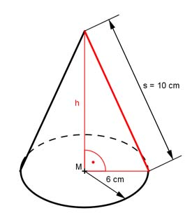

Aufgabe 182 Ein Kegel hat eine Mantellinie s von 10 cm und einen Grundkreisradius r von 6 cm. Wie groß ist sein Volumen V?

Satz von Pythagoras im roten Dreieck: s2 = h2 + 62 cm2 |-62cm2 h2 = s2 - 62 cm2 h2 = 102 cm2 - 62 cm2 h2 = 100 cm2 - 36 cm2 = 64 cm2 |√ h = 8 cm л * r2 * h V = ------------ 3 л * 62 cm2 * 8 cm V = --------------------- = 301,4 cm3 3